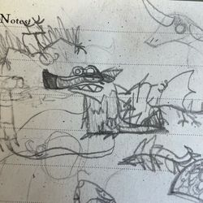

ABOUT ME
My name is Piper, I'm 19, I'm a girl... and of course, none of that really tells you anything about me, but that's how people always open these.
I was born and currently live in Alberta, Canada, which is a dry, cold, mostly-empty place not unlike the surface of Mars.
I'd describe myself as generally laid-back, hardworking, with a dry sense of humor. Whether you agree with this assessment or not is up to you. I aspire to someday work in medicine or chemical engineering, but that's a long way off still. I'm currently studying for my undergrad degree; majoring in Chemistry. I'd like to work in petroleum engineering or pharmaceuticals one day (fulfilling my childhood dream of working for evil scifi corporations.)
My hobbies and interests generally center around low-brow art in all its forms--B-movies, street art, rock posters, underground comics, cartoons, marketing art, signage, video games, shoujo manga, sci-fi literature, toys...
Basically anything mass-produced and genre-oriented. The way that meaning and beauty almost accidentally emerge through these art forms fascinates me, and I'm just enough of a loser or kid-at-heart (depending on who you ask) for me to enjoy them as intended.
My other greatest interest is the almighty rock-and-roll and everything that surrounds it: subculture, music history, fashion, urban legends, and adjacent media.
I was sorta born into that stuff; both my parents have been super into punk rock since forever ago. I guess I'm the opposite of the stereotypical teenager rebelling against her parents with loud music and bad decisions!
Some hobbies of mine include birdwatching, people-watching, drawing, paddleboarding, and of course writing for this website.
CONTACT ME

My E-mail is badgersaurus@disroot.org.
I really do like E-mails as a form of communication and would deeply appreciate any letters!

If you're more into instantaneous simultaneous conversation,
as most people are nowadays,
you can ring me on Discord at @badgersaurus.
I'm on there pretty often for mostly school and real-life friendship reasons, so you should get a response soon enough.
ABOUT BADGERSAURUS
Badgersaurus is a character I came up with in summer 2021, right before I started high-school. She's a minor kaiju (about the size of a three-story building or so), maybe from outer space or maybe from here, half-badger and half-unspecified-dinosaur (stegosaurus spikes, T-rex teeth, ambiguous relatability to a wide audience.) She's like me, but with the major differences of being very large and knowing how to play guitar.
Oh, and she can breathe fire, of course.

The first-ever doodle of Badgersaurus, circa July 2021.
She kinda looks like she's about to sneeze here.
Why Badgersaurus? I associate both of these animals with strong symbolism; the badger, to me, represents hard work, perseverance, strong family bonds, and fighting spirit. They're cute but very tough and have some fascinating biological aspects--a lineage of European badgers may inhabit the same sett (burrow) for a century or more, and they are capable of delayed implantation when mating (so they mate in the winter but only become pregnant in the spring.) Badgers in Britain also have the unusual distinction of being both a locally-protected species seen as a national symbol and the subject of a rather cruel yearly cull; an animal that toes the line between well-liked and deeply offensive, apparently, to those British MPs. That dualistic angle is fascinating (and concerning) to me.
As for dinosaurs--the number of dinosaur kaiju far outstrips the number of non-dinosaur kaiju, and I've been crazy about 'em since I was a kid. Ceratopsians and sauropods are my favourite, but I've a fondness for all the herbivores, and the spinosaurid, tyrannosaurid and dromaeosaurid species as well. There's also the idea of a creature which is a common woodland animal somehow containing the essence of something thought extinct millions of years ago--Badgersaurus is an old soul, so to speak, and I like to think I am too in a way.
I think I chose the kaiju angle... well, because I like kaiju movies and toys, but also because I spent essentially all of middle school and much of high school as an essentially invisible presence in the student body. A giant monster is the exact opposite of that--no matter how hard you try, you can't really ignore a giant lizard stomping through Tokyo the way you can racism in 'tolerant' circles or the weird disabled kid in the back of class. Everybody has their own slightly-scuffed psychoanalysis of Godzilla and that's mine: he's here, he's alive, and he won't let you forget it! And Badgersaurus is the same.
About The Site
I've been developing Badgersaurus in some form or another since November 2022, and the site was first published in March of that year. You're currently looking at "Badgersaurus 2.0", which keeps a similar layout to the original with added I-frames and new artwork. My goal was simply to make a fun and entertaining alternative for myself to using Instagram, which I had become upset with for various reasons at the time (the then-recent Facebook leaks and general declining usefulness of the app.) I have been social-media-free since summer 2023, aside from occasionally watching dumb crap on Youtube. I'd recommend it. I feel good and it allows me to feel superior to the chronically online. I don't even know what half of my generation's slang means anymore and every trend I encounter IRL is a surprise to me.
Everything on the site is 100% human-made, self-coded, and totally original (minus some old graphics and movie screenshots here and there.) I used to hand-code everything on the site with pure HTML and CSS in Notepad++, but recently I started using Eleventy to make things even easier.
I am hosted on Neocities and maintain the site regularly although updates are slow nowadays. Please check in whenever!